Private-label spice jars, oil bottles, toothpick boxes and acrylic kitchen organisers.
MOQ 500pcs | 30-45 day production | FOB/CIF/DDP shipping
Single jars, three-jar and four-jar sets on acrylic or metal stands. Strong seller in kitchen and gift retail.
Glass and acrylic oil bottles in 3 graduated sizes, with pouring spouts.
Toothpick boxes, condiment dispensers and countertop organisers.
25 models in this range — click any photo to enlarge. Full catalogue with model numbers available on request.
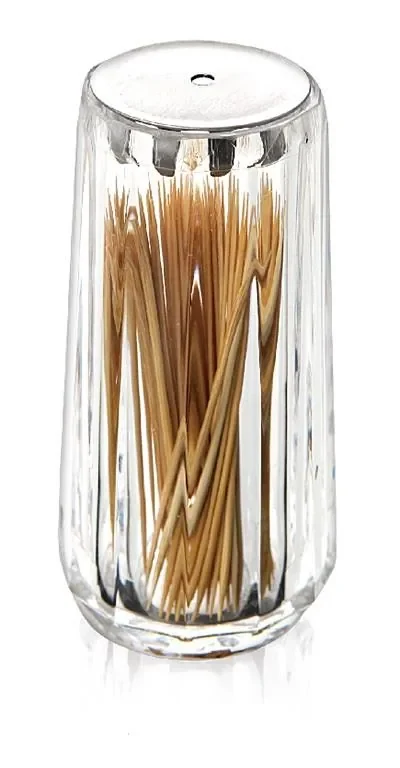
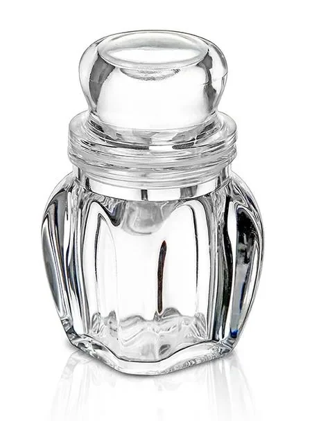
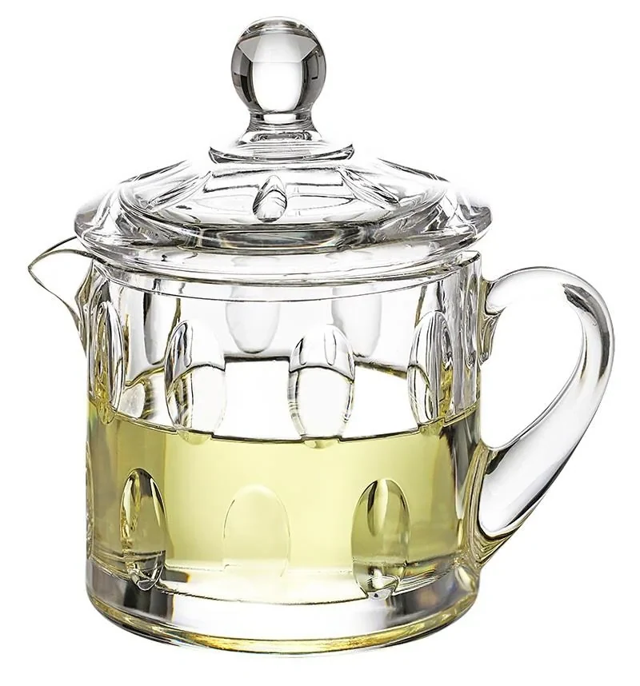
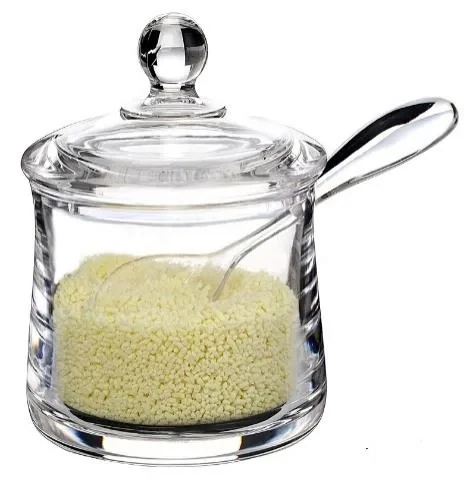
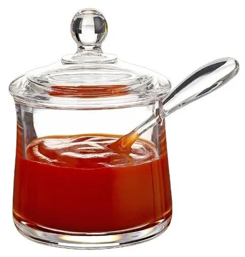
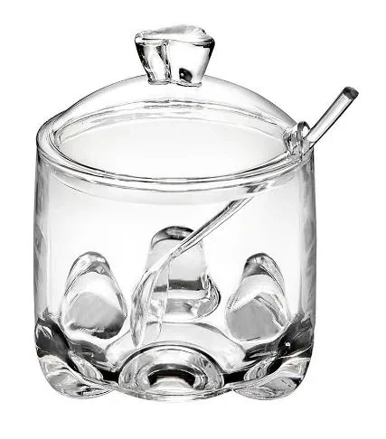
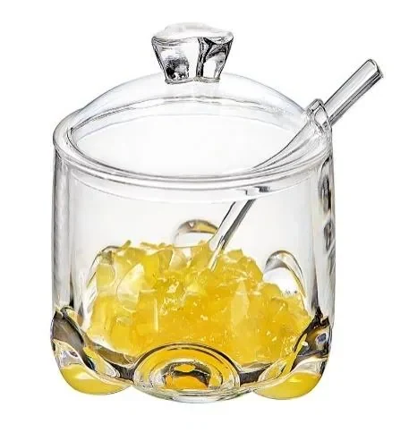
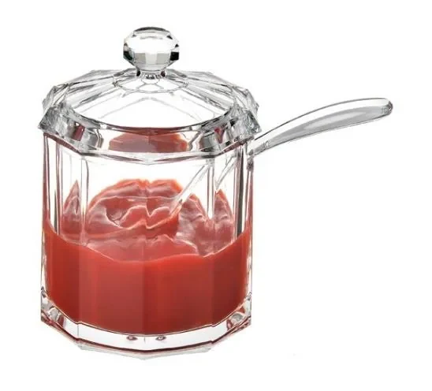
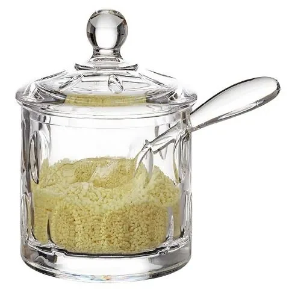
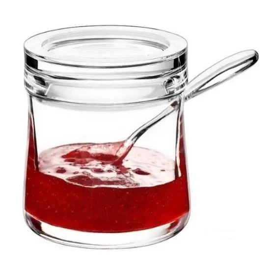
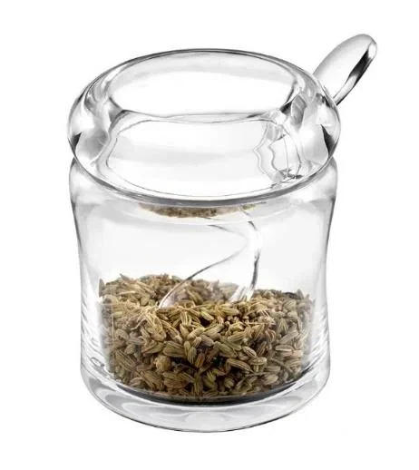
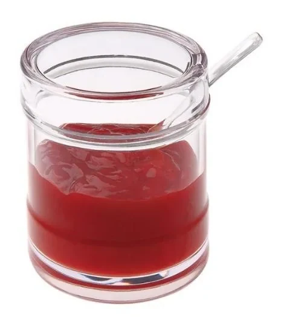
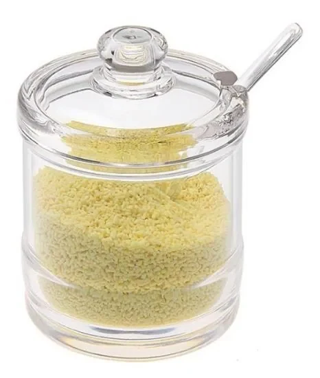
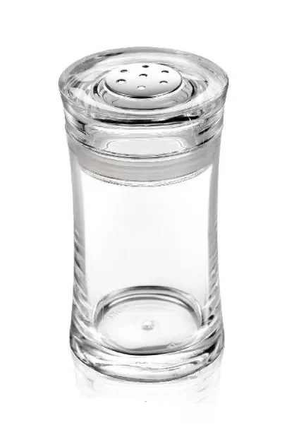
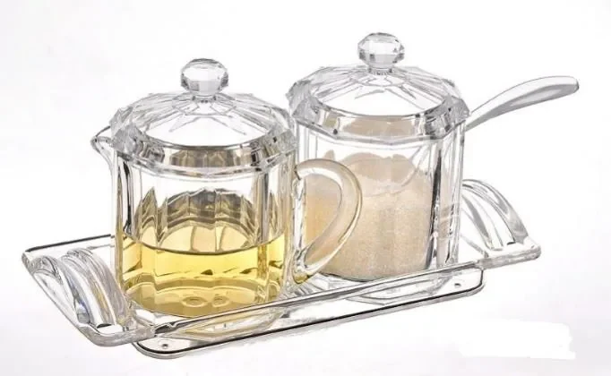
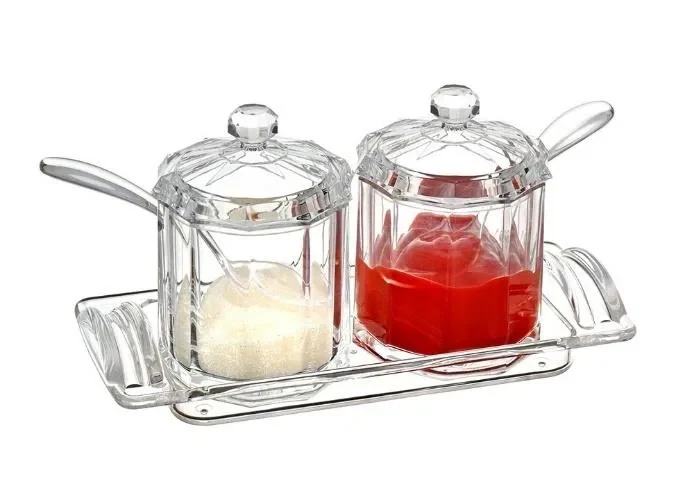
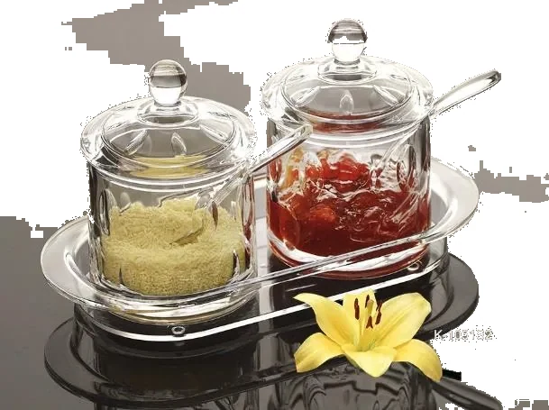
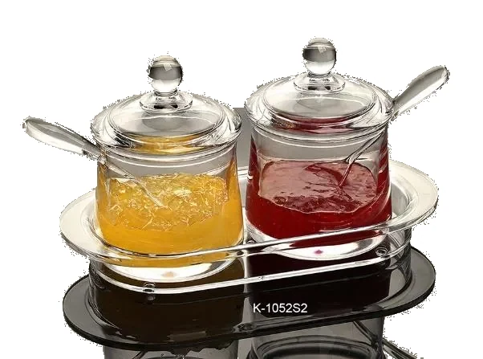
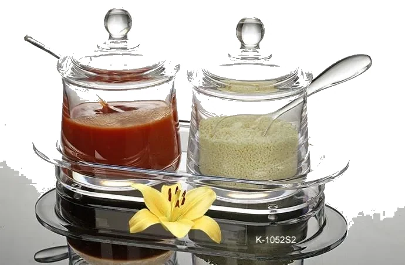
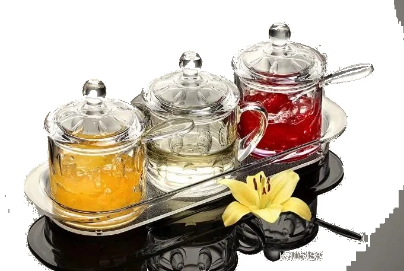
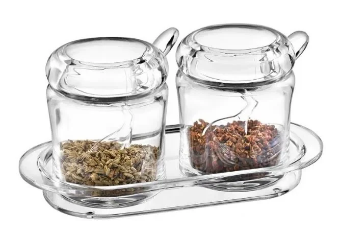
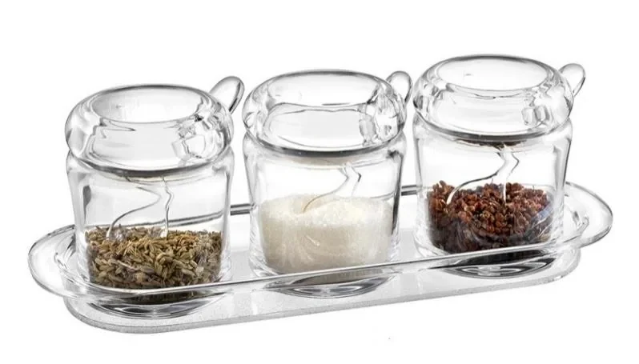
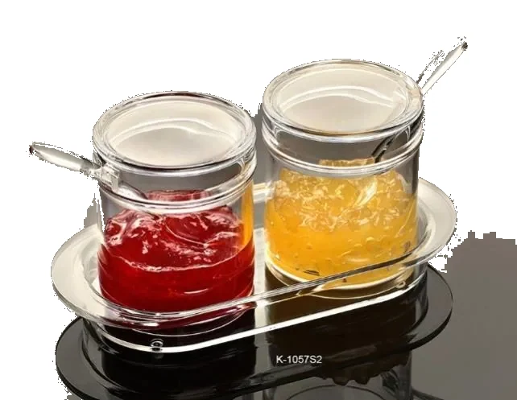
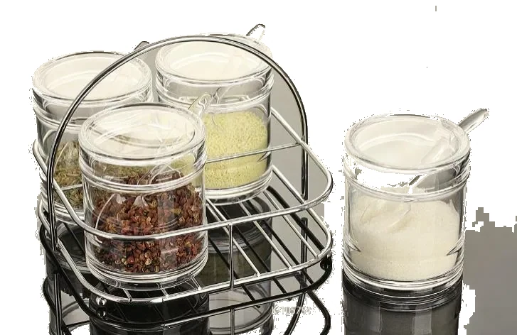
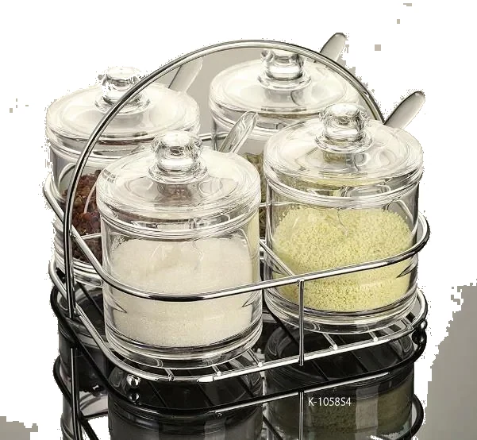
| Material | Acrylic (PMMA) and high-borosilicate glass options |
| Capacity | Jars 80-250ml; oil bottles 180-320ml |
| Finish | Transparent, frosted, colour tint, chrome-plated lid |
| Sets | Single, 2-piece, 3-piece and 4-piece sets with stand |
| MOQ | 500 pcs per design; mixed sets supported |
| Sample Time | 7-10 days for existing moulds |
| Production Time | 30-45 days after sample approval |
| Packaging | Retail colour box / shrink set / master carton |
| Certifications | Food-contact grade materials; FDA / LFGB reports available |
Yes. Standard configurations include glass or acrylic lids, with optional spoons and silicone sealing rings.
Yes. Sets of 2, 3 or 4 jars on acrylic, metal or bamboo stands are our most popular export configuration.
Glass gives premium perception and is dishwasher-safe; acrylic is lighter, cheaper to ship and shatter-resistant. We can quote both so you can position the range.
500 pcs per design. Sets count as one design, and you can mix up to 5 designs per order.
Get a detailed quote with sampling cost, unit pricing and shipping options — replied within 24 hours.
Request Kitchen Storage Quote Chat on WhatsApp